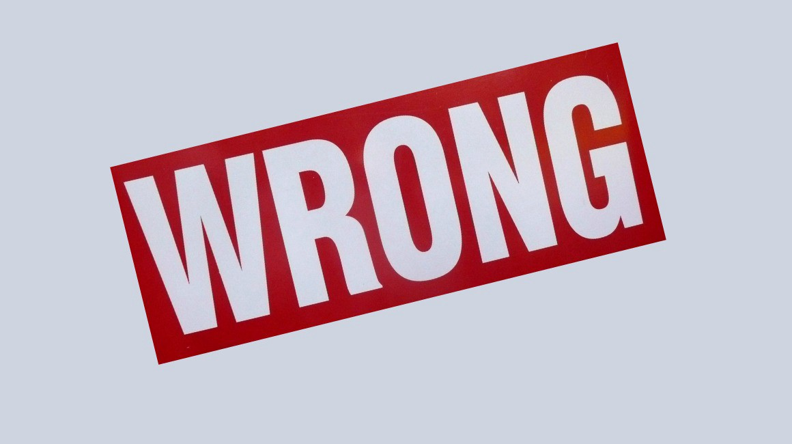
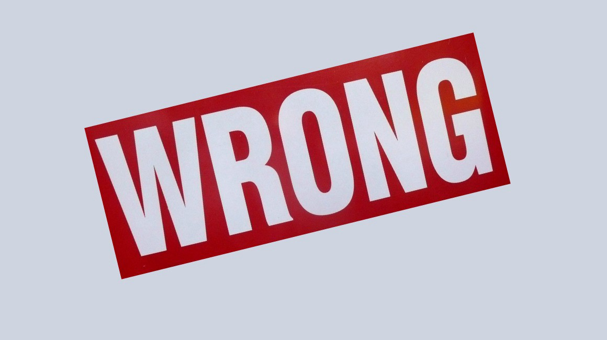

idots are saying the Earth is round because the have picture of the Earth. I can't belive people acually fall for that type of stuff, it's obviously made up by the government. The government brain washes us using chemtrails. You see chemtrails have lots of chemicals in them and those chemicals come down on us and make us think that the government is good and all that. Luckly have no been brain washed and I'm here to tell you that the Earth is indeed flat.
Nasa has been sending satellites into space to take pictures of the Earth, the people of Nasa are taking picures of Earth and doing photoshop to make it look round. Nasa is working with the government to make us belive the Earth is round.
pervious page 
